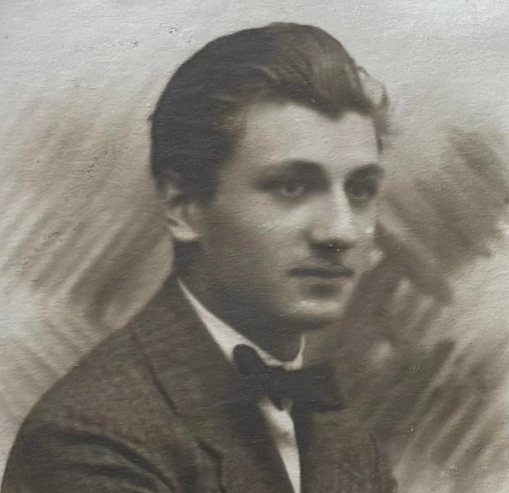
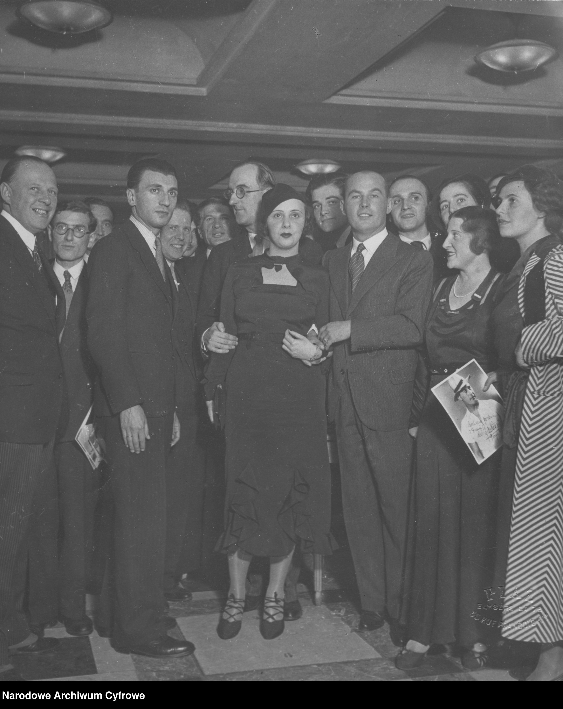
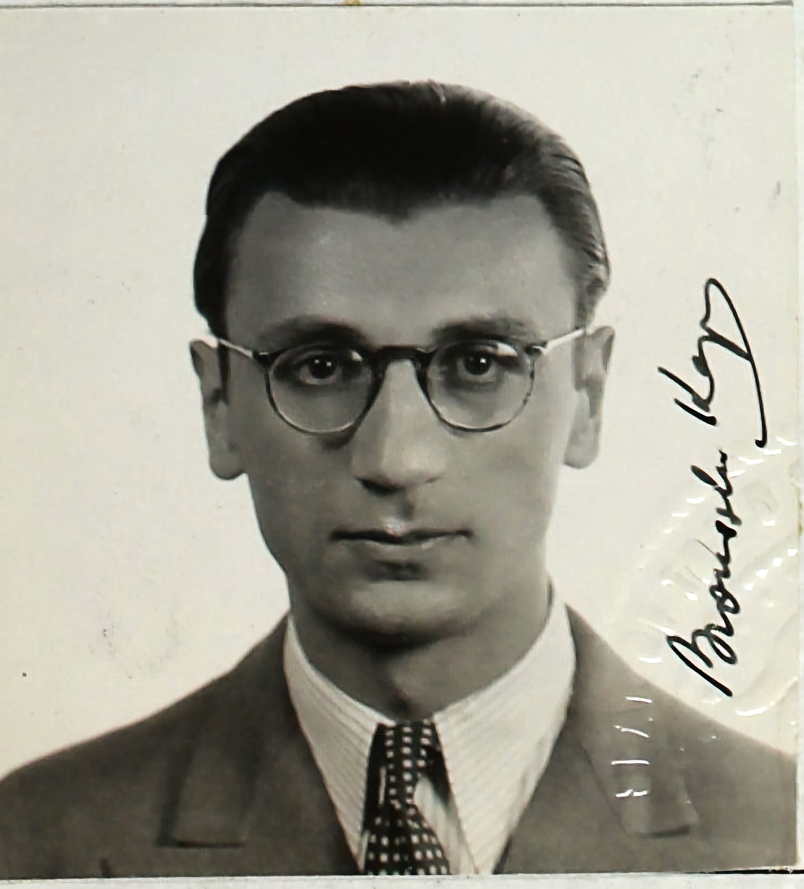
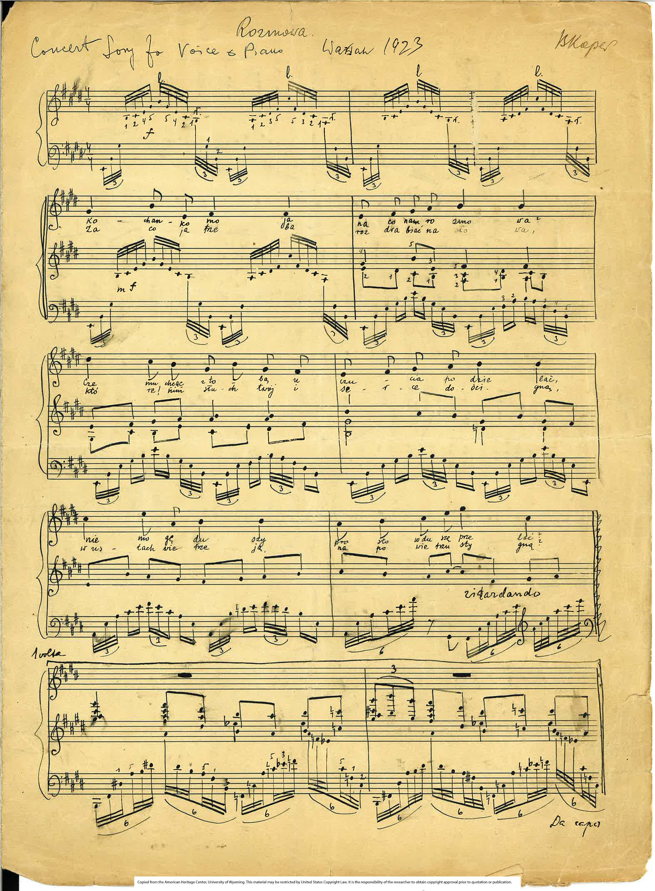
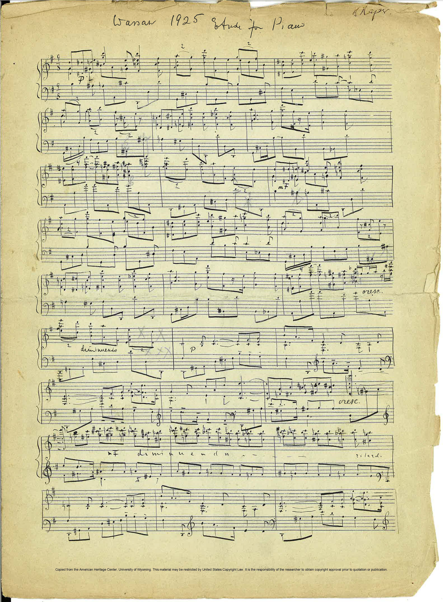
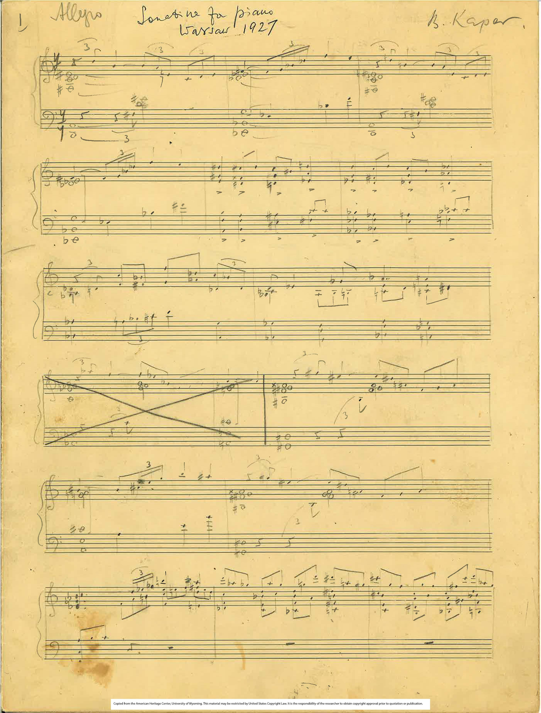
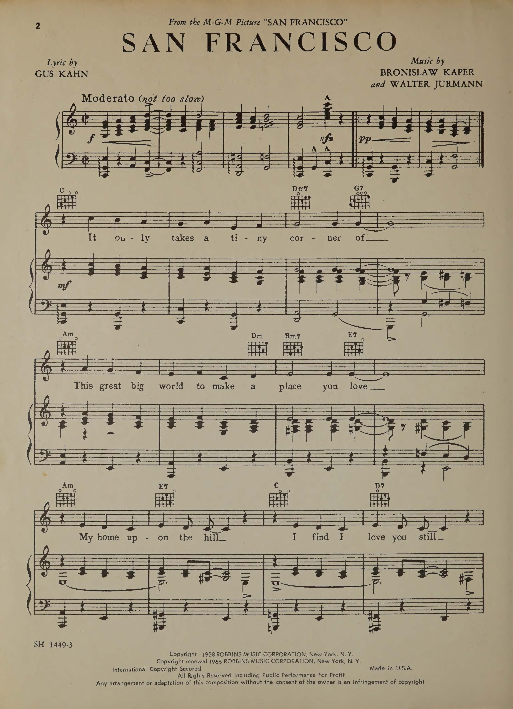

Photo Collection
Portraits & Personal

Young Bronisław Kaper
Warsaw Period
Early portrait from his conservatory years in Warsaw, showing the young composer before his emigration to Berlin.

Young Bronisław Kaper
Warsaw Period
Early portrait from his conservatory years in Warsaw, showing the young composer before his emigration to Berlin.

Bronisław Kaper
Paris Period
Participants of a cocktail party hosted by singer Jan Kiepura (5th from right). Visible among others: Parisian photographer Zygmunt Frenkiel (1st from left), composer Bronisław Kaper (2nd from left), director Ryszard Ordyński (5th from left), singer Adam Didur (9th from right), poet Jan Lechoń (standing in the center, wearing glasses), Jan Kiepura's secretary Marcella Halicz and Alicja Brun (holding a photograph of J. Kiepura), wife of composer Bronisław Kaper (standing in the center).

Kaper & Jurmann
MGM Period
The famous songwriting duo at MGM Studios. Their partnership produced some of Hollywood's most memorable songs.

Bronisław Kaper
MGM Period
The composer in his first Hollywood years.
Bronisław Kaper
MGM Period
The composer in his later Hollywood years, having established himself as one of the leading film composers.
Manuscripts & Sheet Music

Rozmowa Manuscript
1923
Original handwritten score of his earliest surviving composition, written during his studies at Warsaw Conservatory.

Etiuda Manuscript
1925
Piano study manuscript showing his classical training and technical development as a composer.

Sonatina Manuscript
1927
Piano sonatina manuscript showing his classical training and technical development as a composer.

Ja nie mam głosu
1926
First page of sheet-music written under the pseudonym Bruno Asper.

To muszą śpiewać wszyscy
1926
First page of sheet-music written under the pseudonym Bruno Asper.

San Francisco
Sheet Music
The iconic song that became synonymous with the city, showcasing Kaper's melodic gift.
How to View Images
Click on any image to view it in full size in a new tab. You can then zoom, scroll, and save the images as needed. All images are presented for educational and research purposes.